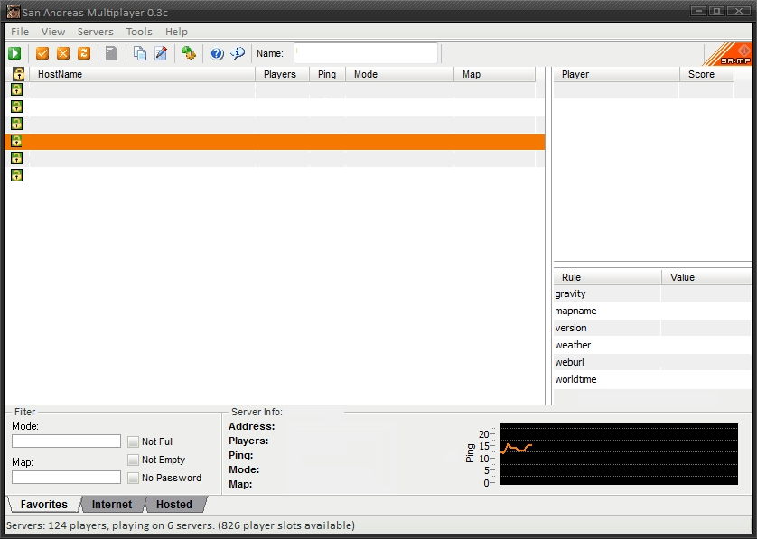

Для начала игры вам необходимо иметь установленную игру Grand Theft Auto: San Andreas без
различных модов и дополнений. Если у вас её нету, то воспользуйтесь этой ссылкой ( скачать uTorrent ) для скачивания.
SUB
Начало игры на Sublime RP
ШАГ 1
ШАГ 2
Далее вам нужно скачать и установить клиент для GTA San Andreas, чтобы получить позможность играть по сети с другими игроками. Клиент называется San Andreas MultiPlayer, сокращённо SAMP. Ниже мы подробнее рассмотрим процесс установки.
ПРОЦЕСС УСТАНОВКИ:
1. Запустите скачанный SA-MP клиент.
2. В появившемся окне согласитесь с условиями пользовательского соглашения и нажмите "I Agree"
3. Следующим шагом укажите папку с установленной GTA San Andreas и нажмите кнопку "Install"
4. Установка будет завершена через несколько секунд.
2. В появившемся окне согласитесь с условиями пользовательского соглашения и нажмите "I Agree"
3. Следующим шагом укажите папку с установленной GTA San Andreas и нажмите кнопку "Install"
4. Установка будет завершена через несколько секунд.
ПЕРВЫЙ ЗАПУСК:
1. В поле "Name" укажите ваш игровой никнейм в формате Имя_Фамилия.
2. Нажмите на кнопку "Add Server" и введите IP адресс нашего сервера.
3. Выделите сервер и нажмите на кнопку "Play"
2. Нажмите на кнопку "Add Server" и введите IP адресс нашего сервера.
3. Выделите сервер и нажмите на кнопку "Play"
